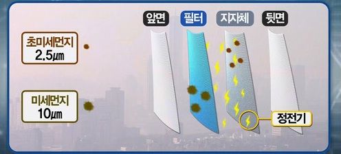

필수템 마스크, 어떻게 만들어지고 무엇을 착용해야할까?!?!?!?
신종 코로나 바이러스 감염증으로 전 국민이 불안에 떨고 있다.
이 코로나 바이러스를 예방하기 위해선 마스크가 필수이다. 그러나 마스크 수요의 급증가로 마스크의 가격은 점점 비싸져간다.
마스크는 어떻게 만들어지는 것이고 어느 마스크를 쓰고 생활해야 할까?
마스크의 주 재료는 내피와 외피를 구성하는 스펀본드 부직포, 멜트블로운 필터(초극세섬유의 부직포, MB필터), 귀에 거는 이어밴드, 코집게 등이다.

SB부직포와 지지대 MB필터 등으로 구성된 4중 부직포와 코집게, 이어밴드 등을 차례로 붙인 뒤 불량품 검수, 포장을 하면 마스크 한 개가 완성된다.
여기서 MB필터가 정전기를 이용해 먼지나 세균 등을 걸러내는 기능을 해 KF94,80 마스크 생산에 필수적이다.
MB필터는 정전기필터라고도 하는데 충돌, 간섭, 중력침강, 확산으로 잡히지않는 미세먼지와 초미세먼지까지 걸러내기위해 정전기를 입힌 MB필터를 사용한다.
보건용 마스크는 약사 법에 따라 ‘의약외품’으로 지정돼 관리되는데 종류로는 KF(Korea Filter)80,94,99(입자차단 성능)가 있다.
입자차단 성능 숫자가 높을수록 숨쉴 때 먼지를 걸러주는 비율 즉 미세입자 차단율은 높지만 산소투과율이 낮아져 숨쉬기는 불편하다.
감염자와 의료진은 N95마스크로 일상에서는 쓰기 불편할 정도의 필터가 착장된 마스크를 써야하지만 일상에서는
일회용 덴탈 마스크(수술용 마스크) 혹은 KF80 정도면 충분하다고 밝혀졌다.
필터 능력이 높아질수록 공기의 흐름을 차단하는 능력도 함께 높아져 호흡곤란과 폐기능이 떨어진 환자와 노인들이 오래 착용하면
문제가 생길 수 있기 때문에 굳이 높은 필터능력이 착장된 마스크는 쓰지 않아도 된다.
마스크 필터 기능 실험에서는 수술용 마스크가 비말을 95% 이상 걸러낼 수 있다고 검증됐다.
가격의 부담으로 최근 사용량이 급증한 면 마스크는 바이러스 필터의 역할을 하지 못하고 얼굴을 가리는 용도로만 쓸 수 있다.
예방차원인 일반인들은 면 마스크를 쓰기 보다는 감염예방용 마스크를 재사용하는 것이 더 나은 방법이라고 한다.
최근 면 마스크에 정전기 필터를 착용하여 끼는 등 다양한 방법으로 경제적으로 도움이되는 면 마스크를 개발하고 있는 모습을 보인다.
HOVID-19 김다경 기자 (HOLSton31001@covid.19)